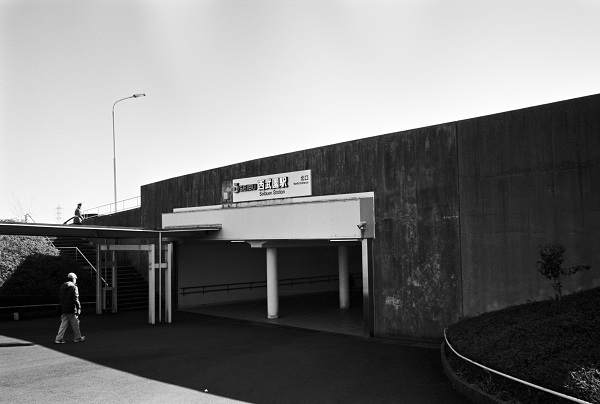

SK06_西武園線 西武国分寺線
SK06 西武園駅 Seibuen
東村山駅
←← 西武園線
東村山駅
←← 国分寺線

2018/2/18 ﾐﾉﾙﾀCLE 35mm ｱｸﾛｽ
2018/2/18 ﾐﾉﾙﾀCLE 35mm ｱｸﾛｽ
2018/2/18 ﾐﾉﾙﾀCLE 35mm ｱｸﾛｽ
2018/2/18 ﾐﾉﾙﾀCLE 35mm ｱｸﾛｽ
2018/2/18 ﾐﾉﾙﾀCLE 35mm ｱｸﾛｽ
2018/2/18 ﾐﾉﾙﾀCLE 35mm ｱｸﾛｽ
戻る
ﾎｰﾑ